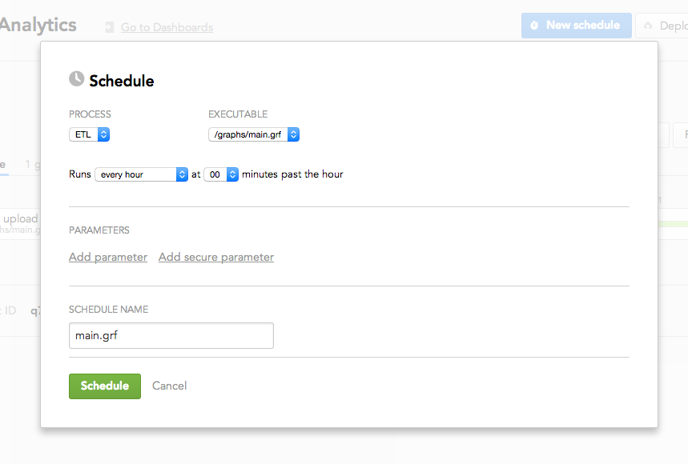
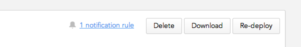
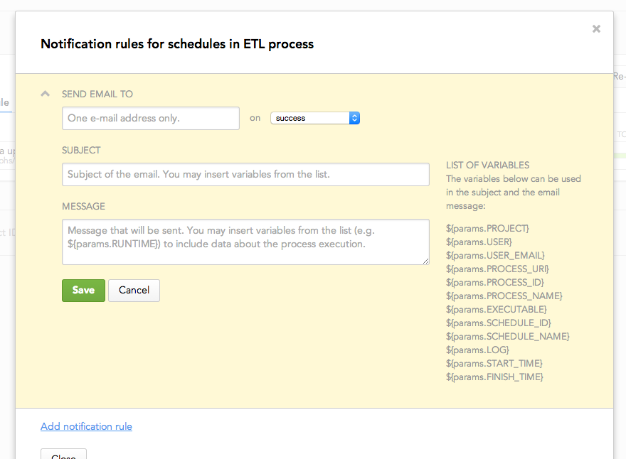
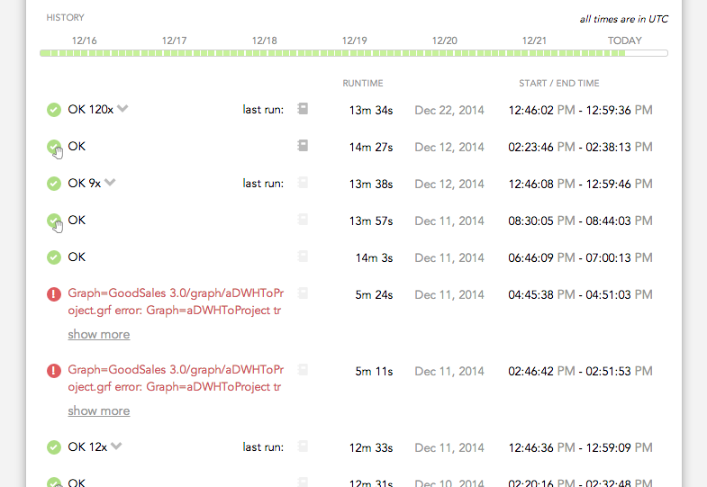

Getting started with GoodData Data Integration Console
Periodically, you may wish to update the data in your project with new data captured by the ETL graph you have defined. Since this graph exists in two places, the CloudConnect project and the GoodData platform, you have multiple options for integrating fresh data.
When your ETL processes have been deployed to your GoodData projects, you can define the automation of data loading. This definition consists of two main components:
- Schedule - a repeated execution of an ETL graph, specified to occur at regular intervals as short as every 15 minutes. You may define schedule parameters to pass into the schedule, so that the selected ETL graph is processed for a specified project or other variable.
- Notification - an email alert that informs stakeholders of specific events occurring in the ETL process. For example, you can configure a notification to alert stakeholders of a process failure. In this manner, project administrators and key users of the project can stay informed about ETL in their projects without having to login to the console.
Learn more about GoodData Data Intergration Console
Creating the automated data loading process
Suppose you have finished ETL development in CloudConnect and have deployed your project to the GoodData platform. When your CloudConnect project is deployed to your GoodData project, your ETL graphs in the project become a data loading process, for which you would like to set up a periodic run. Also, it would be nice to get notifications of when the scheduled run has succeeded or failed.
-
1 Create a schedule

Go to the Data Integration Console, select your project and click the New schedule button and select your process and graph you want to schedule. Select a frequency, add parameters, etc. and save the schedule.
-
2 Set up a notification for monitoring the data loading process


We can notify you about your data loads via email notifications. Go to the project page, select the process and click the notification rules link. For adding a new notification rule, click the add notification link and set up your notification.
-
3 Track your data loads

As you will receive the notifications, you can track the history of execution for each schedule.